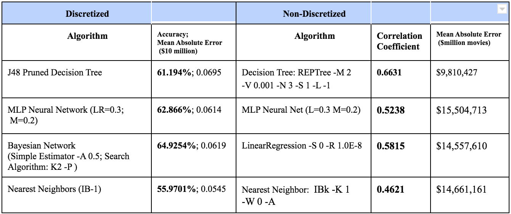

The goal of our project is to predict the opening week box office revenue of a movie based upon features found from its YouTube trailer. This is an important task for the multi-billion dollar movie industry where producers often compete for opening weekend box office sales. Despite the literature on this topic, it is not uncommon for experts to incorrectly predict opening box office sales. Past studies in this field like “Pre-Production Forecasting of Movie Revenues with a Dynamic Artificial Neural Network” state that word of mouth may be used to improve forecasts, but fail to measure this. In this study, we hope to add YouTube data as a measure of “word of mouth” to the forecasting.
We approached this problem by putting our dataset through four learners: MLP neural nets, nearest neighbor, J48 decision tree, and Bayes net. The dataset, which is described fully in the following section, consisted of a total of 9 features: the number of views (adjusted for number of days ahead of movie release the trailer is released), times shared, like:dislike ratio, movie genre, number of theaters showing the movie, and the opening box office revenue.
Our data set consists of data from about 300 different movie trailers between the years 2010 and 2016, independently gathered from one Youtube channel Movieclips Trailers to reduce the amount of viewer bias that occurs between popular and unpopular channels. We kept the movies recent (after 2010) because as the Internet grows, more and more people are using Youtube for movie trailers, which might potentially skew the number of viewers towards newer movies.
The data set has a total of 9 attributes. These attributes are: the number of views (adjusted for number of days ahead of movie release the trailer is released), times shared, like:dislike ratio, movie genre, number of theaters showing the movie, and the opening box office revenue.
We wrote a script to assist in the collection of this data; it takes in a movie trailer url and returns the number of trailer views prior to movie release date, ratio of likes to dislikes, and the number of times the trailer was shared. Then, we manually filled in the genre of each movie, the number of theaters the movie was released in, and the opening week box office revenue with the assistance of the website www.boxofficemojo.com
Our initial 10-fold cross-validation results are shown in the following table:
By comparing the classification accuracies of the discretized dataset to the correlation coefficients of the non-discretized dataset (both are bolded in the table), we determined that the discretized data produced better results. As a result, we decided to focus on trying to optimize the accuracy for discretized data for the rest of the project.
Graph displaying the predicted discretized revenues vs the actual discretized revenues when putting the dataset through a MLP neural net.